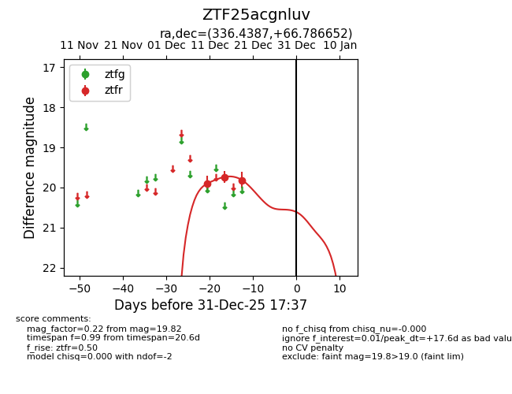
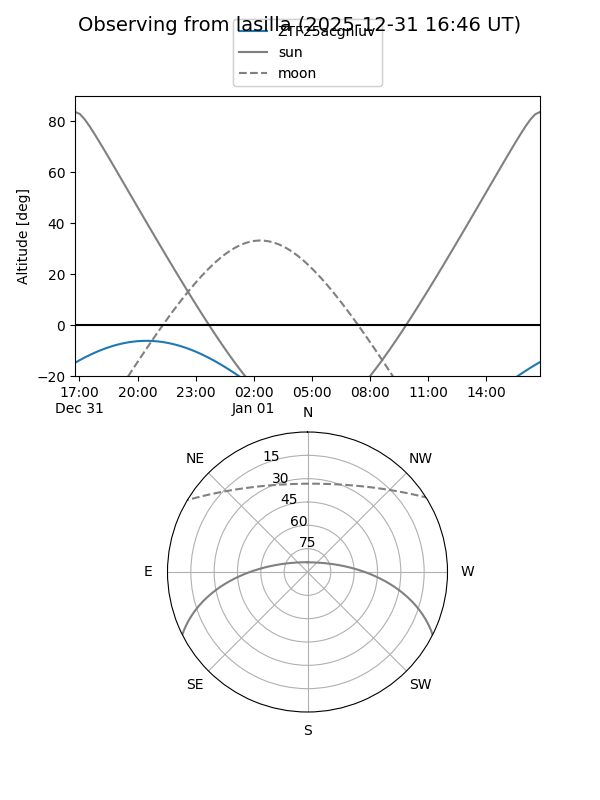
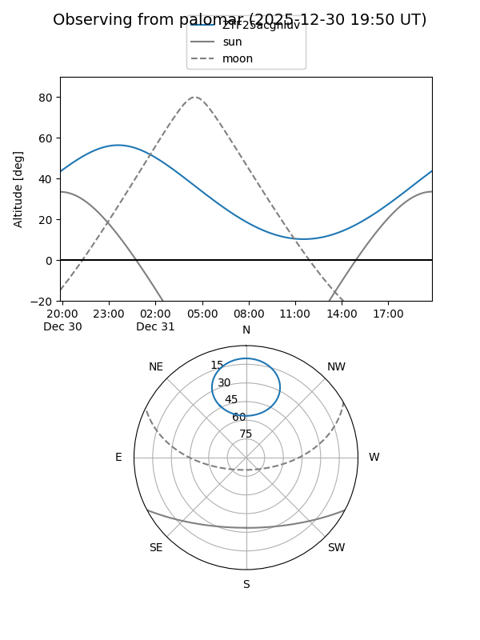
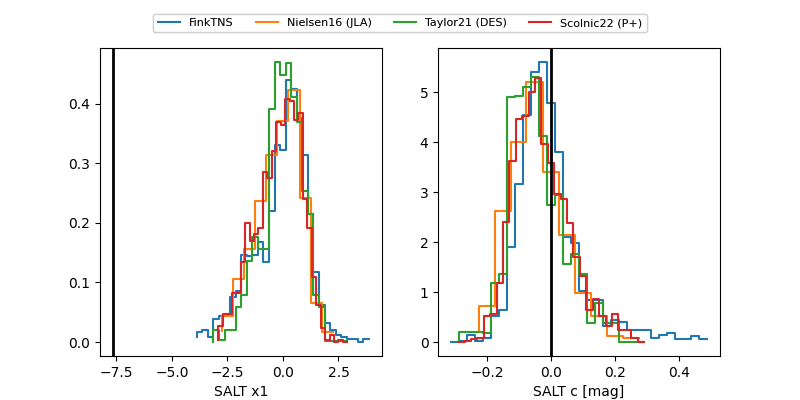

ZTF25acgnluv
Target ZTF25acgnluv at 2025-12-19 06:39
Aliases and brokers:
FINK: fink-portal.org/ZTF25acgnluv
Lasair: lasair-ztf.lsst.ac.uk/objects/ZTF25acgnluv
ALeRCE: alerce.online/object/ZTF25acgnluv
alt names
ZTF25acgnluv (ztf,fink_ztf)
Coordinates:
equatorial (ra, dec) = 336.4387,+66.78665
equatorial (HMS+DMS) = 22:25:45.29,+66:47:11.95
galactic (l, b) = (109.2675,+7.86228)
Flags:
Photometry:
last ztfr=19.82
3 ztfr detections
Lightcurve

Visibility


Additional plots
